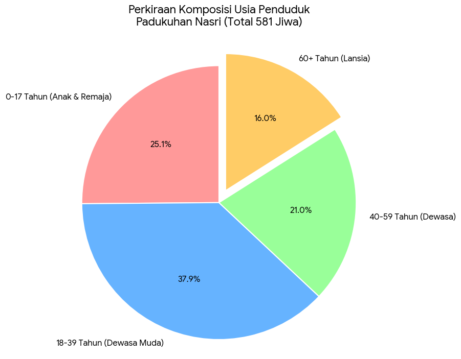

0
Jumlah penduduk di Pedukuhan Nasri adalah sebanyak 581 jiwa dengan 216 KK.
Mata Pencarian
Pekerjaan utama masyarakat Padukuhan Nasri adalah buruh yaitu, buruh tani, buruh bangunan, buruh pabrik.. Selain itu, ada juga penduduk yang bekerja di sektor perdagangan, jasa, dan UMKM.
Pendidikan
Padukuhan Nasri memiliki beberapa lembaga pendidikan:
- TK Kartini Semi Asri
- SD Muhammadiyah Semingin
- Pondok Pesantren Ibnu Sina
Komposisi Usia

Catatan: Grafik di atas adalah perkiraan yang dibuat berdasarkan data sensus parsial (khususnya data penduduk lansia) dan proyeksi demografi umum. Data ini digunakan untuk memberikan gambaran umum mengenai komposisi kependudukan di Padukuhan Nasri.